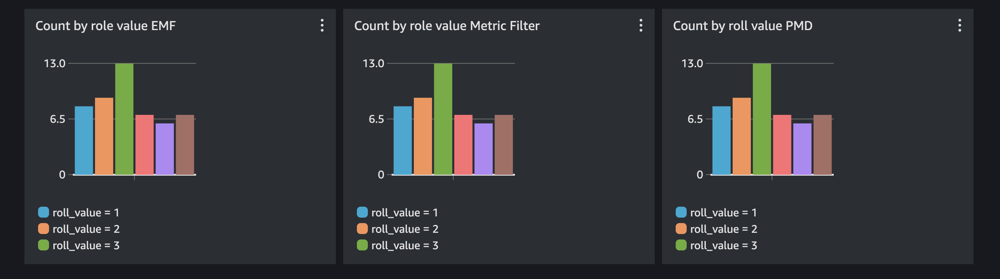

Creating Custom Metrics with the AWS Rust SDK¶
Introduction¶
Rust, a systems programming language focused on safety, performance, and concurrency, has been gaining popularity in the software development world. Its unique approach to memory management and thread safety makes it an attractive choice for building robust and efficient applications, particularly in the cloud. With the rise of serverless architectures and the need for high-performance, scalable services, Rust's capabilities make it an excellent choice for building cloud-native applications. In this guide, we'll explore how to leverage the AWS Rust SDK to create custom CloudWatch metrics, enabling you to gain deeper insights into your applications' performance and behavior within the AWS ecosystem.
Pre-Requesites¶
In order to use this guide we will need to install Rust and also create a CloudWatch log group and log stream to store some of our data we will use later.
Installing Rust¶
On Mac or Linux:
On Windows, download and run rustup-init.exe
Creating a CloudWatch Log Group and Log Stream¶
- Create the CloudWatch Log Group:
- Create the CloudWatch Log Stream:
The Code¶
You can find the complete code in the sandbox section of this repository.
git clone https://github.com/aws-observability/observability-best-practices.git
cd observability-best-practices/sandbox/rust-custom-metrics
This code will first simulate a diceroll , we will pretend that we care about the value of this diceroll as a custom metric. We will then show 3 different ways of adding the metric to CloudWatch and viewing it on a dashboard.
Setting up the Application¶
First we need to import some crates to use in our application.
use crate::cloudwatch::types::Dimension;
use crate::cloudwatchlogs::types::InputLogEvent;
use aws_sdk_cloudwatch as cloudwatch;
use aws_sdk_cloudwatch::config::BehaviorVersion;
use aws_sdk_cloudwatch::types::MetricDatum;
use aws_sdk_cloudwatchlogs as cloudwatchlogs;
use rand::prelude::*;
use serde::Serialize;
use serde_json::json;
use std::time::{SystemTime, UNIX_EPOCH};
In this import block we mainly are importing the aws sdk libraries we will use. We also bring in the 'rand' crate so we can create a random diceroll value. Finally we have a few libraries like 'serde' and 'time' to handle some of the data creation that we use to populate our sdk calls.
Now we can create our diceroll value in our main function, this value will be used by all 3 AWS SDK calls that we make.
//select a random number 1-6 to represent a diceroll
let mut rng = rand::thread_rng();
let roll_value = rng.gen_range(1..7);
Now that we have our diceroll number, let's explore 3 different ways of adding the value to CloudWatch as a custom metric. Once the value is a custom metric we gain the ability to set up alarms on the value, set up anomaly detection, plot the value on a dashboard, and much more.
Put Metric Data¶
The first method we will use to add the value to CloudWatch is PutMetricData. By using PutMetricData we are writing the time-series value of the metric directly to CloudWatch. This is the most efficient way of adding the value. When we use PutMetricData we need to provide the namespace, as well as any dimensions to each AWS SDK call along side the metric value. Here is the code:
First we will set up a function that takes in our metric (diceroll value) and it returns a Result type, which in Rust indicates success of failure. The first thing we do within the function is initialize our AWS Rust SDK client. Our client will inherit credentials and region from the local environment. So make sure those are configured by running aws configure from your command line prior to running this code.
async fn put_metric_data(roll_value: i32) -> Result<(), cloudwatch::Error> {
//Create a reusable aws config that we can pass to our clients
let config = aws_config::load_defaults(BehaviorVersion::v2023_11_09()).await;
//Create a cloudwatch client
let client = cloudwatch::Client::new(&config);
After initializing our client we can start to setup the input needed for our PutMetricData API call. We need to define the dimensions and then the MetricDatum itself, which is the combination of dimensions and value.
//Use fluent builders to build the required input for pmd call, starting with dimensions.
let dimensions = Dimension::builder()
.name("roll_value_pmd_dimension")
.value(roll_value.to_string())
.build();
let put_metric_data_input = MetricDatum::builder()
.metric_name("roll_value_pmd")
.dimensions(dimensions)
.value(f64::from(roll_value))
.build();
Finally we can make the PutMetricData API call using the input we defined previously.
let response = client
.put_metric_data()
.namespace("rust_custom_metrics")
.metric_data(put_metric_data_input)
.send()
.await?;
println!("Metric Submitted: {:?}", response);
Ok(())
await it's completion. Then we return the Result type as defined in the top level of our function.
When it's time to call our function from main it will just look like this:
//call the put_metric_data function with the roll value
println!("First we will write a custom metric with PutMetricData API call");
put_metric_data(roll_value).await.unwrap();
unwrap the value as in our case we are only interested in the 'Ok' result and not the error. In a production scenario you would likely error handle in a different way.
PutLogEvent + Metric Filter¶
The next way to create a custom metric is to simply write it to a CloudWatch log group. Once the metric is in a CloudWatch log group we can use a Metric Filter to extract the metric data from the log data.
First we will define a struct for our log messages. This is optional, as we could just manually build a json. But in a more complex application you would likely want this logging struct for re-usability.
//Make a simple struct for the log message. We could also just create a json string manually.
#[derive(Serialize)]
struct DicerollValue {
welcome_message: String,
roll_value: i32,
}
Once our struct is defined we are ready to make our AWS API call. Again we will create an API client, this time using the logs sdk. We will also define the system time using unix epoch timing.
//Create a reusable aws config that we can pass to our clients
let config = aws_config::load_defaults(BehaviorVersion::v2023_11_09()).await;
//Create a cloudwatch logs client
let client = cloudwatchlogs::Client::new(&config);
//Let's get the time in ms from unix epoch, this is required for CWlogs
let time_now = SystemTime::now()
.duration_since(UNIX_EPOCH)
.unwrap()
.as_millis() as i64;
First we will create json from a new instantiation of our struct we defined earlier. Then use this to create a log event.
let log_json = json!(DicerollValue {
welcome_message: String::from("Hello from rust!"),
roll_value
});
let log_event = InputLogEvent::builder()
.timestamp(time_now)
.message(log_json.to_string())
.build();
Now we can complete our API call in a similar way to what we did with PutMetricData
let response = client
.put_log_events()
.log_group_name("rust_custom")
.log_stream_name("diceroll_log_stream")
.log_events(log_event.unwrap())
.send()
.await?;
println!("Log event submitted: {:?}", response);
Ok(())
Once the log event has been submitted, we need to go to CloudWatch and create a Metric Filter for the log group to properly extract the metric.
In the CloudWatch console go to the rust_custom log group that we created. Then create a metric filter. The filter pattern should be {$.roll_value = *} . Then for the Metric Value use $.roll_value . You can use any namespace and metric name that you like. This Metric Filter can be explained like so:
"Trigger the filter whenever we get a field called 'roll_value', no matter what the value is. Once triggered, use the 'roll_value' as the number to write to CloudWatch Metrics".
This way of creating metrics is very powerful for extracting time series values from log-data when you do not have control over the log formatting. Since we are directly instrumenting code, we do have control over the format of our log data, therefore a better method may be to use CloudWatch Embedded Metric Format, which we will discuss in the next step.
PutLogEvent + Embedded Metric Format¶
CloudWatch Embedded Metric Format(EMF) is a way of embedding time series metrics directly in your logs. CloudWatch will then extract the metrics without the need for Metric Filters. Let's take a look at the code.
Create a logs client again along with grabbing system time in unix epoch.
//Create a reusable aws config that we can pass to our clients
let config = aws_config::load_defaults(BehaviorVersion::v2023_11_09()).await;
//Create a cloudwatch logs client
let client = cloudwatchlogs::Client::new(&config);
//get the time in unix epoch ms
let time_now = SystemTime::now()
.duration_since(UNIX_EPOCH)
.unwrap()
.as_millis() as i64;
Now we can create our EMF json string. This needs to have all the data required for CloudWatch to create the custom metric, so we embed the namespace, dimensions, and value in the string.
//Create a json string in embedded metric format with our diceroll value.
let json_emf = json!(
{
"_aws": {
"Timestamp": time_now,
"CloudWatchMetrics": [
{
"Namespace": "rust_custom_metrics",
"Dimensions": [["roll_value_emf_dimension"]],
"Metrics": [
{
"Name": "roll_value_emf"
}
]
}
]
},
"roll_value_emf_dimension": roll_value.to_string(),
"roll_value_emf": roll_value
}
);
Notice how we actually create a dimension out of our roll value as well as using it for the value. This let's us perform a GroupBy on the roll value so we can see how many times each roll value was landed on.
Now we can make the API call to write the log event just like we did before:
let log_event = InputLogEvent::builder()
.timestamp(time_now)
.message(json_emf.to_string())
.build();
let response = client
.put_log_events()
.log_group_name("rust_custom")
.log_stream_name("diceroll_log_stream_emf")
.log_events(log_event.unwrap())
.send()
.await?;
println!("EMF Log event submitted: {:?}", response);
Ok(())
Once the log event is submitted to CloudWatch, the metric will be extracted without any need for a metric filter. This is a great way of creating high-cardinality metrics where it may be easier to write these values as log messages instead of doing a PutMetricData API call with all the different dimensions.
Putting it all together¶
Our final main function will call all three API calls like this
#[::tokio::main]
async fn main() {
println!("Let's have some fun by creating custom metrics with the Rust SDK");
//select a random number 1-6 to represent a dicerolll
let mut rng = rand::thread_rng();
let roll_value = rng.gen_range(1..7);
//call the put_metric_data function with the roll value
println!("First we will write a custom metric with PutMetricData API call");
put_metric_data(roll_value).await.unwrap();
println!("Now let's write a log event, which we will then extract a custom metric from.");
//call the put_log_data function with the roll value
put_log_event(roll_value).await.unwrap();
//call the put_log_emf function with the roll value
println!("Now we will put a log event with embedded metric format to directly submit the custom metric.");
put_log_event_emf(roll_value).await.unwrap();
}
In order to generate some test data, we can build the application and then run it in a loop to generate some data to view in CloudWatch. From the root directory run the following
Now we will run it 50 times with a 2 second sleep. The sleep is just to space the metrics out a little bit to make them easier to view in a CloudWatch Dashboard.
Now we can review the results in CloudWatch. I like to do a GroupBy on the dimensions, this lets me see how much each time the roll value was selected. The metric insights query should look like this. Change up the metric name and dimension name based on if you changed anything.
Now we can put them all three on a dashboard and see as expected the same graph.

Cleanup¶
Make sure to delete your rust_custom log group.